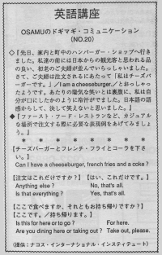

注文はこれだけですか。
Can I have a coke please? The other day, Osamu went to the hamburger shop with his wife. An elderly couple stood in front of them. They looked like they were from Japan. They ordered and said "I am a cheeseburger." People were snickering at them. Even though he didn't say anything, Osamu broke out in a cold sweat as if he had made the mistake. He couldn't laugh at them because they used the correct Japanese language grammatical structure. At a fast food restaurant, you don’t have to talk a lot, just order. The workers at fast food restaurants may not be as helpful or as friendly as ordinary restaurants. In America a lot of these workers are high school kids or handicapped. When a fast food place is busy, they might not even ask you a full question. They might say: "For here?"
先日、家内とハンバーガー・ショップへ行きました。私達の前には日本からの観光客と思われる品の良い、初老のご夫婦が並んでいらっしゃいました。さて、ご夫婦は注文されるにあたって「私はチーズバーガーです。」 I am a cheeseburger.／とおっしゃったようです。まわりの陽気な笑いとは裏腹に、私は自分が口にしたかのように冷汗がでました。日本語の語感からして、決して笑えないと思いました。
チーズバーガーとフレンチ・フライとコーラをください。
Can I have a cheeseburger, french fries, and a coke?
注文はこれだけですか？
はい、これだけです。
Anything else?
No, that’s all.
Is that everything?
Yes, that’s all.
ここで食べますか、それともお持ち帰りですか？
ここです。／持ち帰ります。
Is this for here or to go?
For here.
Are you dining here or taking out?
Take out, please.

| © 1995-2013 NACOS International Institute. All Rights Reserved. |